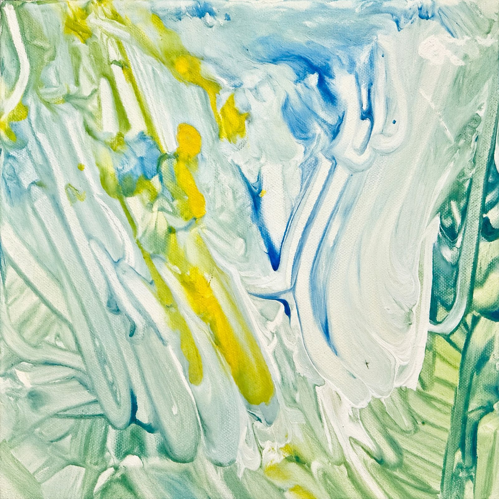
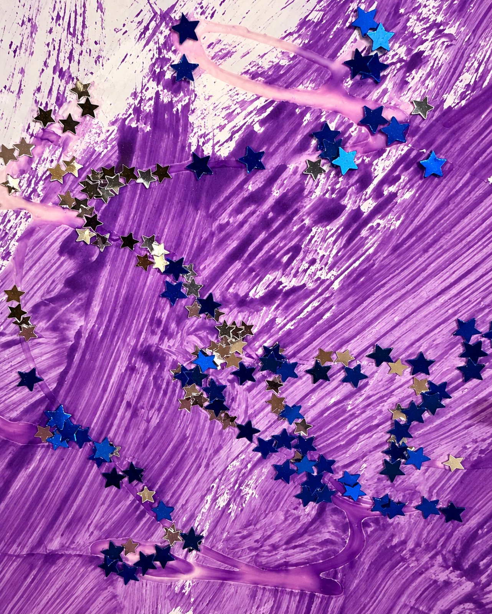
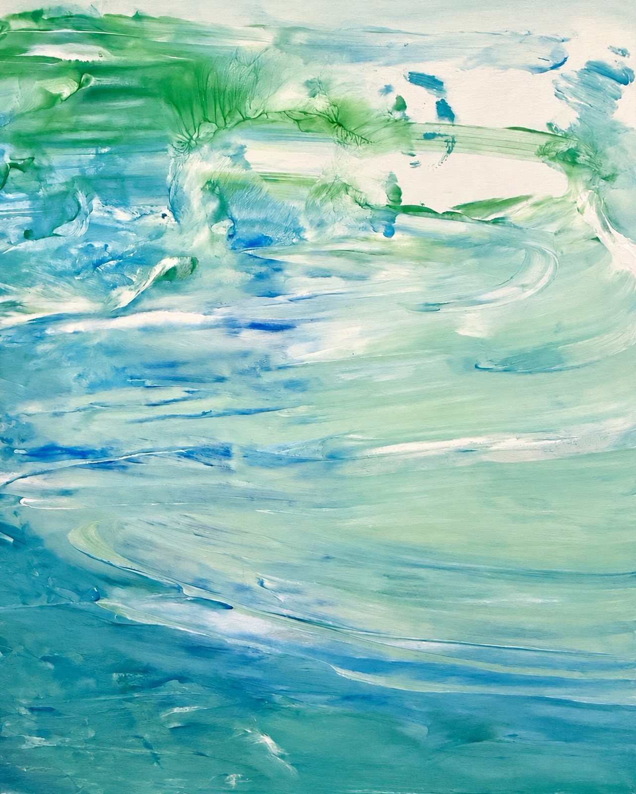
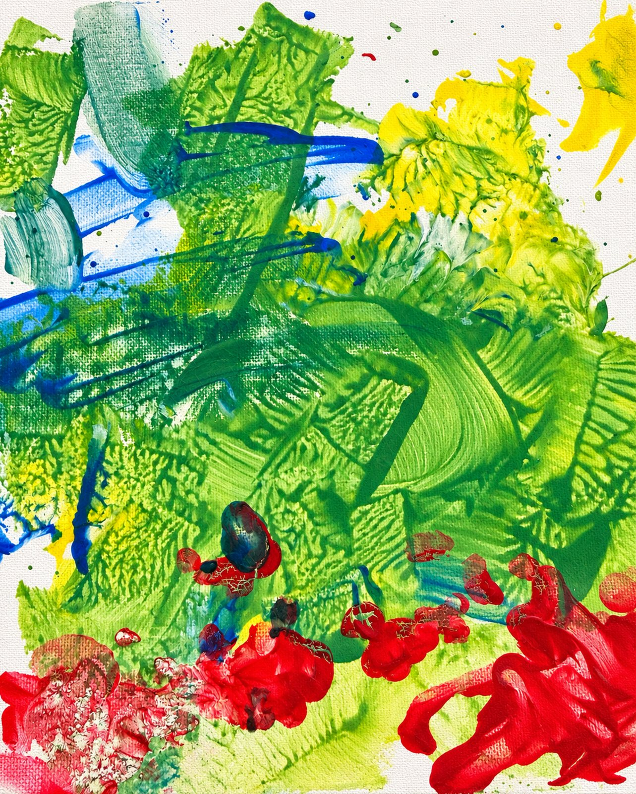
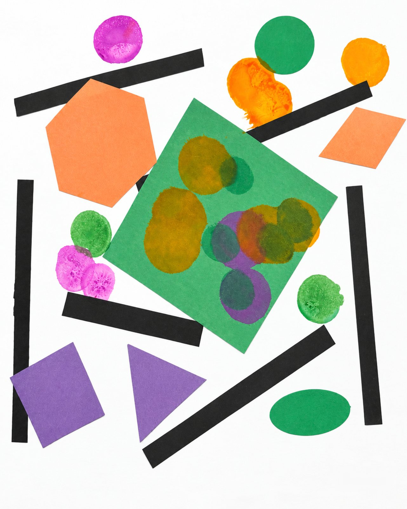
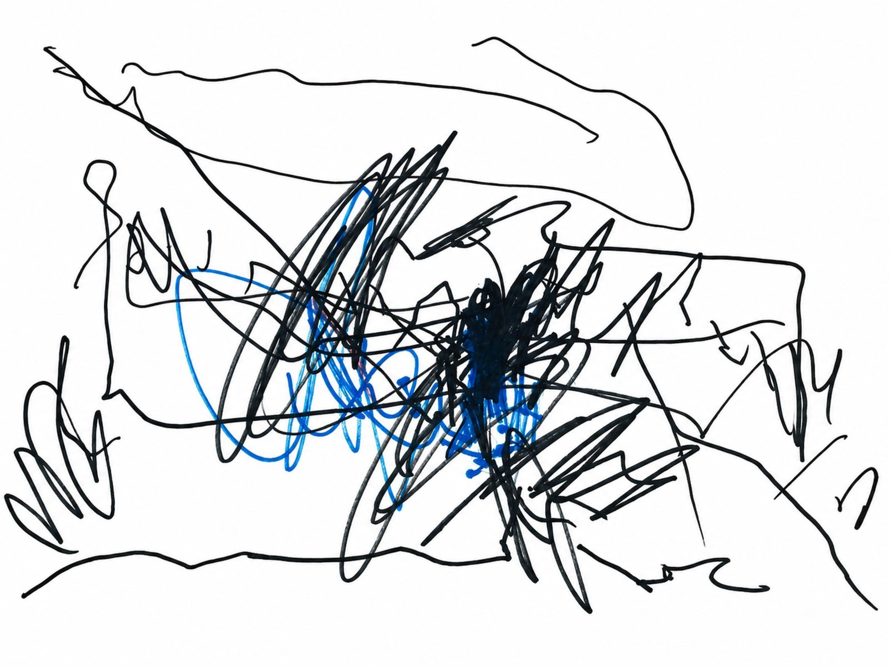
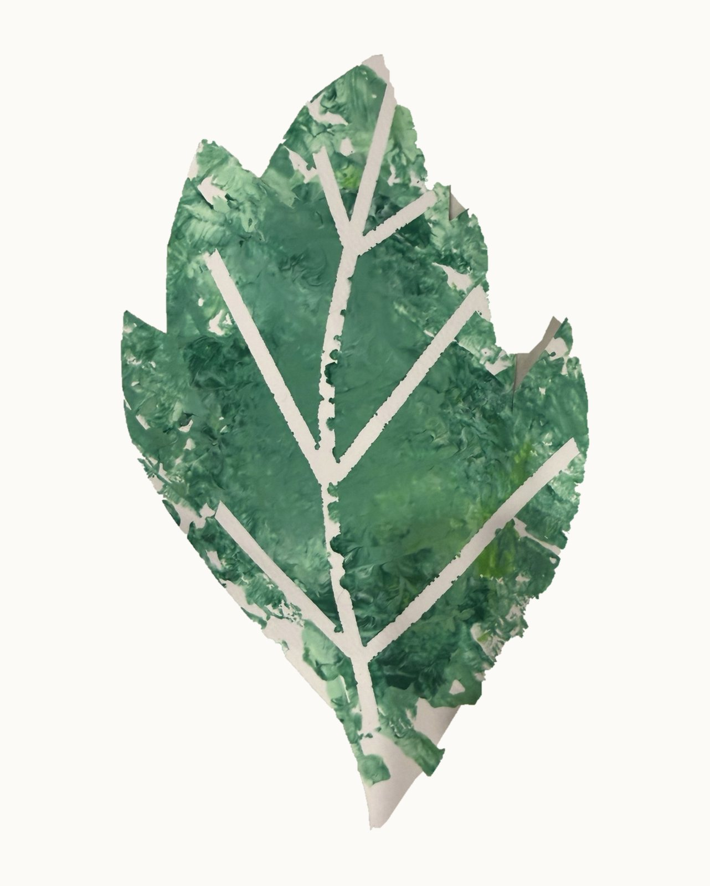
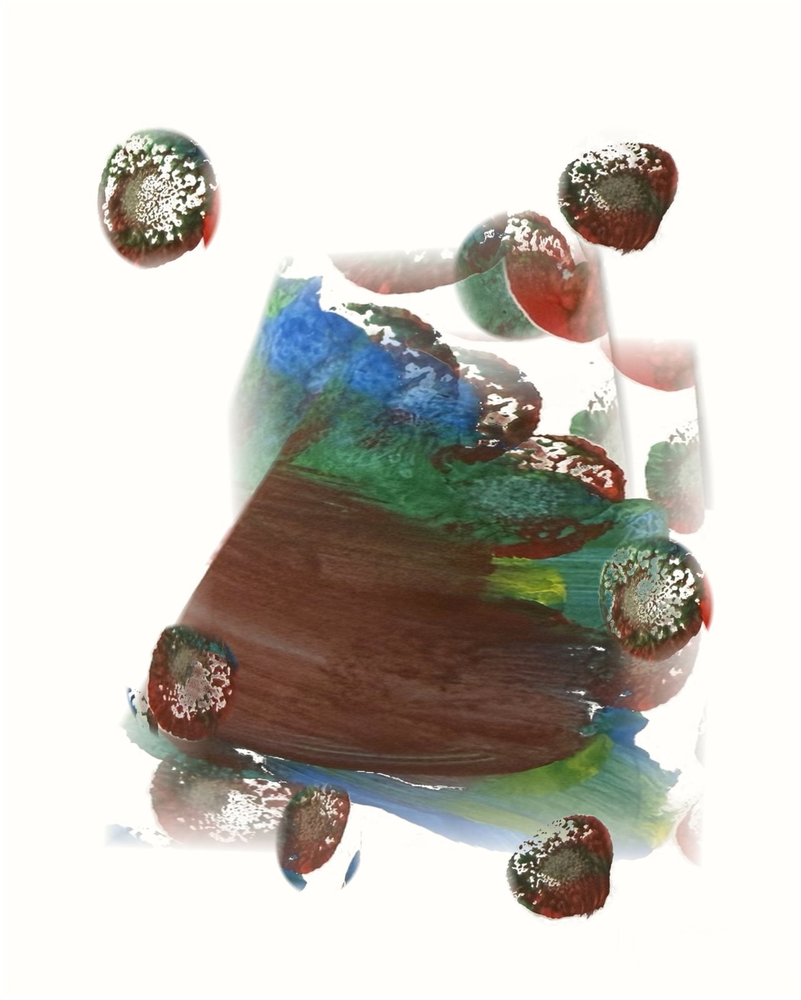

The collection
Eleven of Banks' pieces, cleaned up from photos of the originals. Each screen gets its own; dark mode uses Emerald Texture everywhere. Fields may be cropped; objects are always shown whole.

tape-resist-01 · object
swirl-01 · field
stars-01 · field
ripple-01 · field
smear-01 · field
finger-01 · field
night-01 · field
collage-01 · object
scribble-01 · object
leaf-01 · object
cone-01 · object